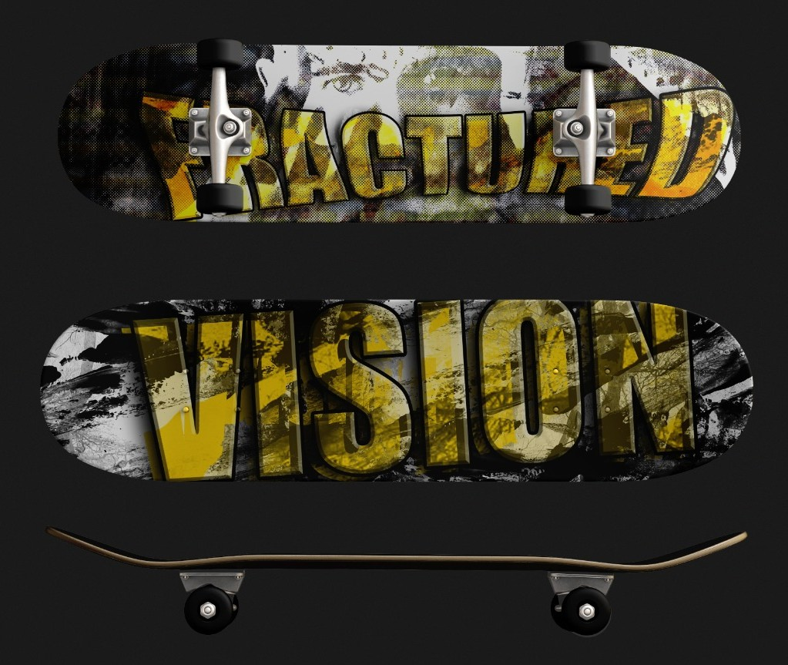
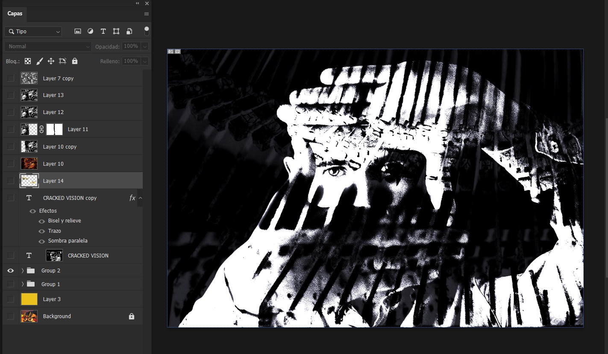
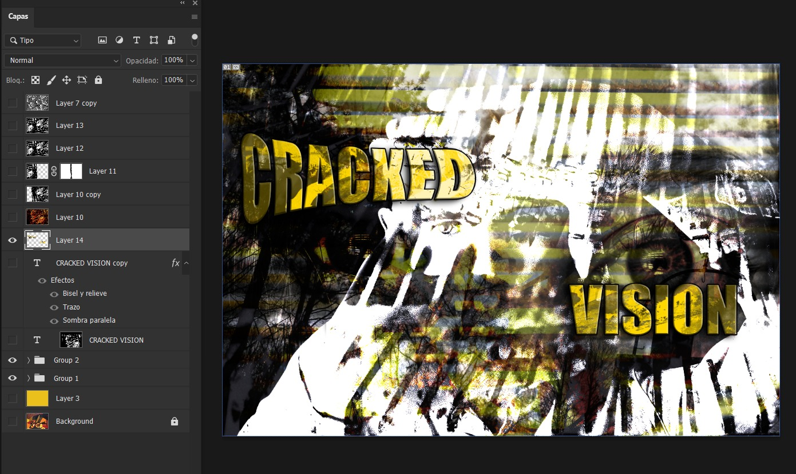
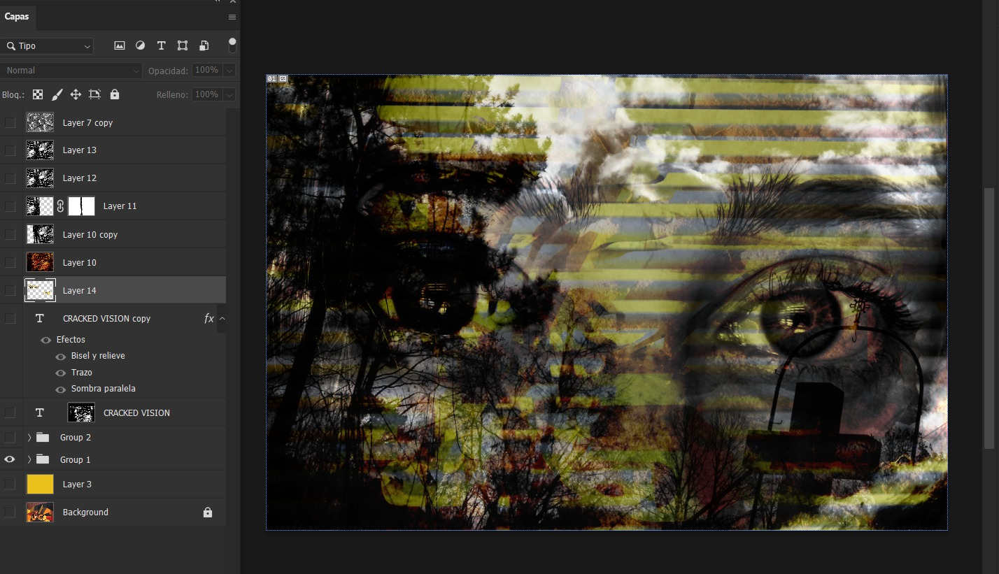

My Design Projects
These projects demonstrate my experience with photo editing, typography, composition, and digital design.
Skateboard Design

This skateboard design was created by combining different images, textures, and typography effects to create a surreal visual style.
Black and White Mix

This project experiments with black and white image editing by combining different layers and textures. The goal was to create a dramatic visual effect using contrast and composition.
Photo Editing Practice

This project focused on combining images, typography, and color to create a more experimental visual composition.
Poster Design Practice
This project focused on poster composition, typography balance, and color experimentation.
Project Summary
This table summarizes my main projects and tools used.
| Project | Role | Tools Used | Year |
|---|---|---|---|
| Skateboard Design | Designer | Photoshop | 2025 |
| Black and White Mix | Designer | Photoshop | 2025 |
| Photo Editing Practice | Designer | Photoshop | 2025 |
| Poster Design Practice | Designer | Photoshop | 2025 |
My Creative Process
Below is the process I follow when creating digital design projects.
Editing in Photoshop

Step-by-Step Process
It's important to choose what you want to convey, then find suitable images and a color palette.
- Find at least 5 images that you like.
- The background color is important because it will determine what you want to convey.
- You should check if it looks good with "normal, overlay, subtract, etc" so that each image blends together.
- Set the text color to the same color as the background and play around with the position and deformation of the text.
- Then you find a skateboard mockup or a template.
Final Design Result Example
Skills I Developed
These are some of the skills I developed while working on these projects.
- Image composition
- Color palette selection
- Typography experimentation
- Creative layout planning